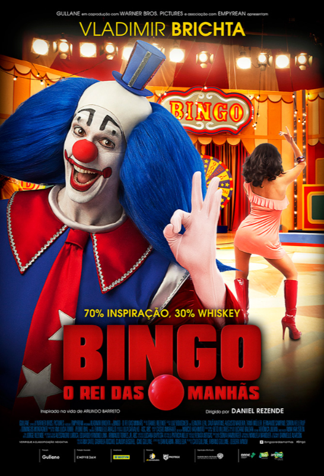

Bingo: O Rei das Manhãs
Um filme que pode parecer apenas a história de um palhaço, mas fala de um drama intenso sobre fama, identidade e solidão. Inspirado no universo do Bozo, mostra o peso de ser conhecido por todos e, ao mesmo tempo, não ser reconhecido de verdade.